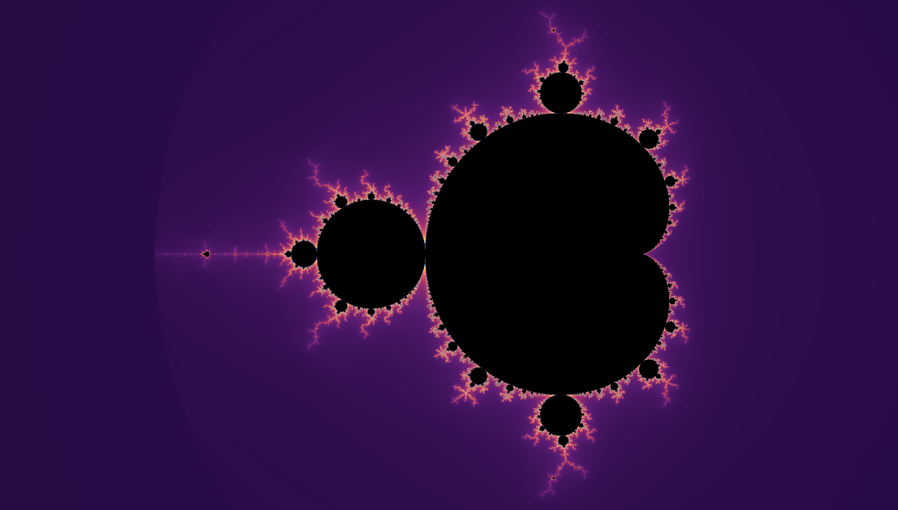
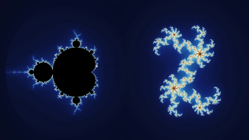
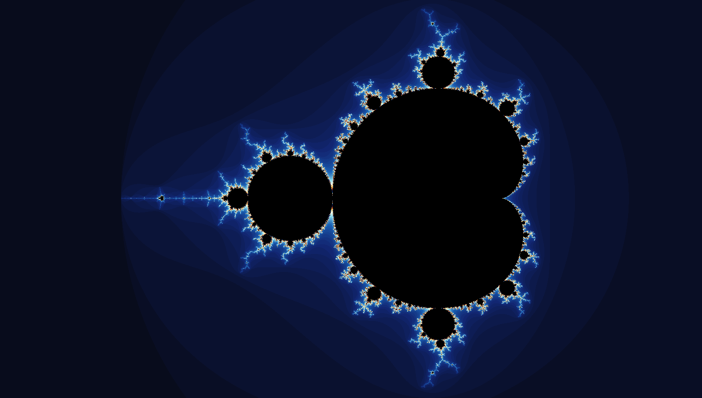
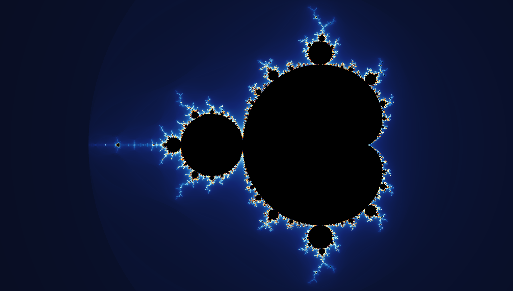
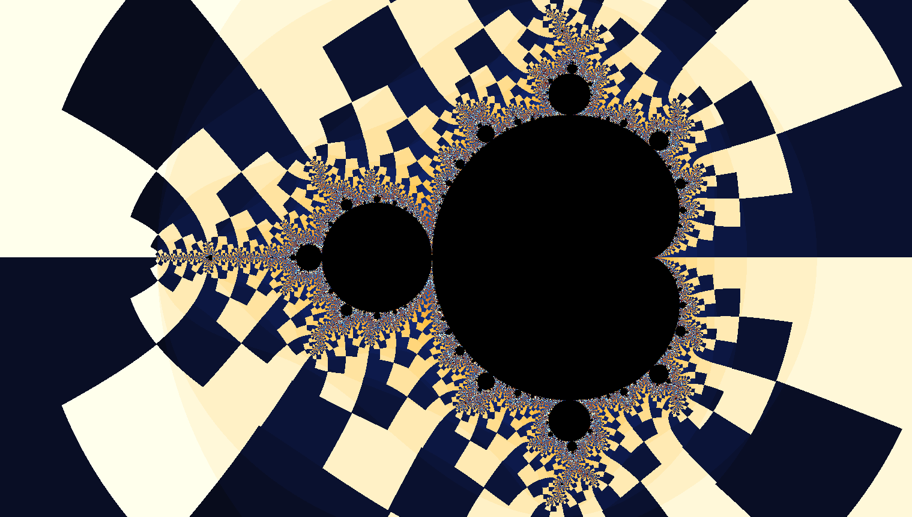
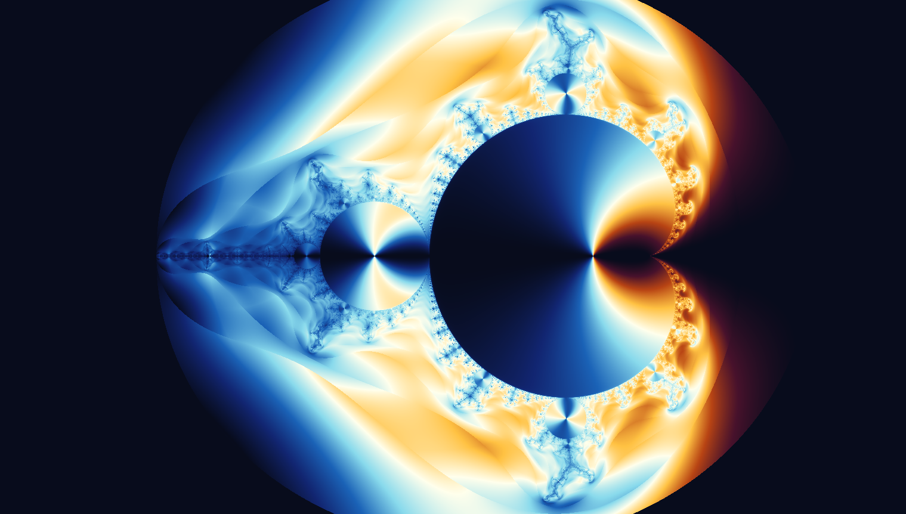
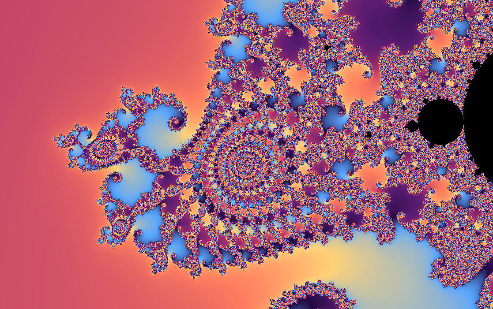
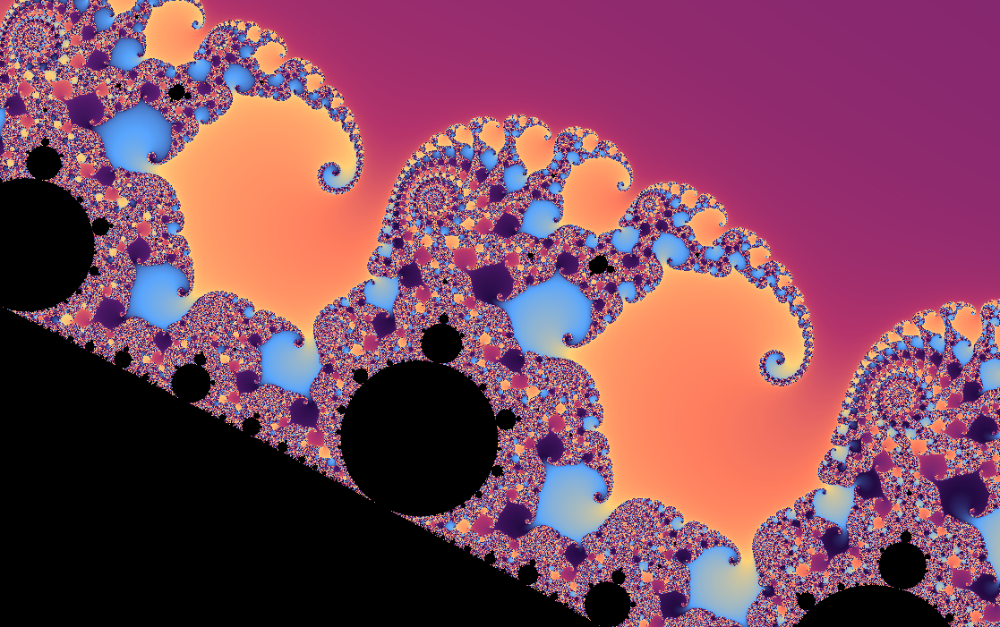
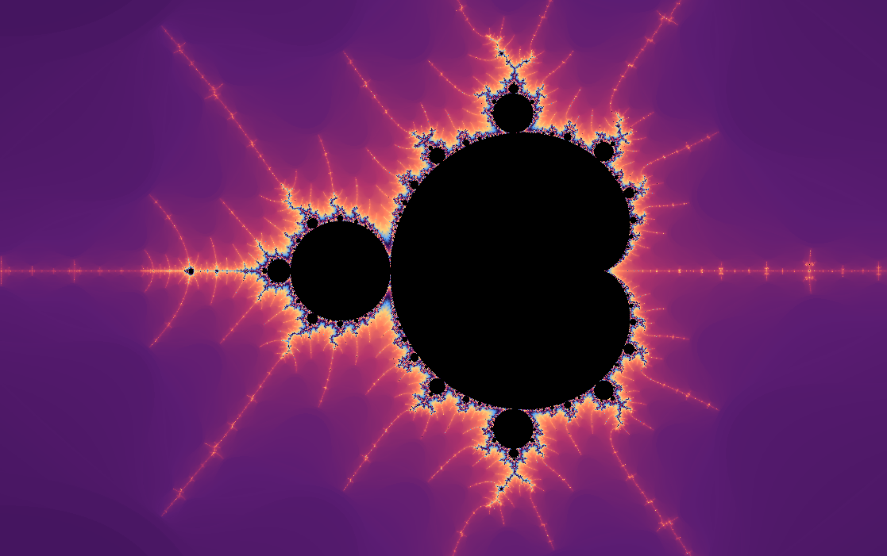

\(c=0\)
0, 0, 0, 0, …
The orbit remains fixed at the origin.
BoundedwxChaos documentation
A map of order and chaos hidden inside one of mathematics’ simplest iterative rules.
A single formula creates an apparently endless landscape of bulbs, spirals, filaments, and miniature worlds. Every point in the image represents a different mathematical experiment.

The Mandelbrot set is not one dynamical system. It is a map of an entire family of systems. Each point \(c\) tells us whether repeatedly applying \(z \mapsto z^2+c\), with \(z\) starting at zero, remains bounded or eventually escapes toward infinity.
From a distance, the Mandelbrot set has a recognizable silhouette: a large cardioid with circular bulbs attached to it. Up close, that clean outline dissolves into branching structures, narrow tendrils, spirals, and smaller echoes of the whole set.
The dark region represents \(c\) parameters whose orbit does not escape during the calculation. The colors outside it show how quickly escaping orbits grow beyond the chosen bailout radius.
Choose a point. Each pixel in the image represents a complex number \(c\).
Complex numbers have a real and imaginary part, \(x + iy\). \(x\) is the real part and corresponds to the horizontal axis, while \(y\) is the imaginary part and corresponds to the vertical axis.
Iterate the formula. Begin with \(z_0=0\), square the current value, and add \(c\) repeatedly.
This is a recurrence relation. We start with \(z_0 = 0\). To obtain \(z_1\) we apply the recurrence: \[ z_1 = z_0^2 + c = c \] Once we have this result we can calculate \(z_2\) by applying the same rule again: \[ z_2 = z_1^2 + c = c^2 + c \] Every subsequent value is obtained in exactly the same way: \[ \begin{aligned} z_3 &= z_2^2 + c = (c^2 + c)^2 + c \\ z_4 &= z_3^2 + c = \bigl((c^2 + c)^2 + c\bigr)^2 + c \\ z_5 &= z_4^2 + c = \bigl(\bigl((c^2 + c)^2 + c\bigr)^2 + c\bigr)^2 + c \\ &\vdots \end{aligned} \]
Expressions involving complex numbers can be expanded using ordinary algebra, together with the defining property \(i^2=-1\).
Write the current value and the selected parameter as:
\[ z=z_x+iz_y, \qquad c=c_x+ic_y \]We can then expand \(z^2+c\):
\[ \begin{aligned} z^2+c &= (z_x+iz_y)^2+(c_x+ic_y) \\ &= z_x^2+2iz_xz_y+i^2z_y^2+c_x+ic_y \end{aligned} \]Because \(i^2=-1\), this becomes:
\[ z^2+c = (z_x^2-z_y^2+c_x) + i(2z_xz_y+c_y) \]Therefore, each iteration can be computed using two real-valued equations:
\[ \begin{aligned} z_{x,n+1} &= z_{x,n}^2-z_{y,n}^2+c_x \\ z_{y,n+1} &= 2z_{x,n}z_{y,n}+c_y \end{aligned} \]For example, because \(z_0=0\):
\[ \begin{aligned} z_1 &= c_x+ic_y \\ z_2 &= (c_x+ic_y)^2+c_x+ic_y \\ &= (c_x^2-c_y^2+c_x) +i(2c_xc_y+c_y) \\ &\vdots \end{aligned} \]To render the Mandelbrot set, evaluate the recurrence for every pixel in the image. Each pixel is converted into a complex parameter \(c=c_x+i c_y\), while the orbit starts at \(z_0=0\).
Instead of using complex-number objects, the calculation can be written using the real and imaginary components directly:
\[ \begin{aligned} z_{x,n+1} &= z_{x,n}^2-z_{y,n}^2+c_x \\ z_{y,n+1} &= 2z_{x,n}z_{y,n}+c_y \end{aligned} \]
for each pixel (px, py):
cx = map px to the horizontal fractal range
cy = map py to the vertical fractal range
zx = 0
zy = 0
iteration = 0
while zx*zx + zy*zy <= 4
and iteration < maxIterations:
nextZx = zx*zx - zy*zy + cx
nextZy = 2*zx*zy + cy
zx = nextZx
zy = nextZy
iteration++
if iteration == maxIterations:
color the pixel as inside the set
else:
color the pixel using iteration
The test \(z_x^2+z_y^2>4\) is equivalent (and faster) to checking \(|z|>2\). Once this happens, the orbit is guaranteed to escape, so no further iterations are necessary.
If you are brave you can try this in wxChaos using the Script editor!.
Watch the orbit. If a point in the orbit moves more than two units away from the center, it is guaranteed to keep escaping outward. If that never happens before the iteration limit is reached, wxChaos treats the point as belonging to the set.
A complex number \(z=x+iy\) can be viewed as a point with horizontal coordinate \(x\) and vertical coordinate \(y\).
Its distance from the center is:
\[ |z|=\sqrt{x^2+y^2} \]To avoid calculating a square root on every iteration, programs usually compare the squared distance instead:
\[ x^2+y^2>4 \]This is equivalent to checking whether the distance is greater than two.
0, 0, 0, 0, …
The orbit remains fixed at the origin.
Bounded0, −1, 0, −1, …
The orbit repeats in a stable period-two cycle.
Bounded0, 1, 2, 5, 26, …
The values quickly grow without bound.
EscapingStart with the complete set and identify the main cardioid and the large period-two bulb attached to its left.
Zoom into the narrow boundary where those two regions meet. The smooth silhouette will give way to branching structures and curled forms traditionally associated with Seahorse Valley.
Select a point near the boundary and display its orbit. Move the point slightly and observe how dramatically the orbit can change.
Open the corresponding Julia set. Move the selected parameter across the Mandelbrot boundary and compare the connected and disconnected Julia sets on either side.
For every parameter \(c\), the function \(f_c(z)=z^2+c\) has its own Julia set in the \(z\)-plane. The Mandelbrot set records how those Julia sets behave.
When \(c\) belongs to the Mandelbrot set, the corresponding Julia set is connected. When \(c\) lies outside it, the Julia set is disconnected and breaks into separate pieces.
This is why moving through Mandelbrot parameter space can be understood as browsing an atlas of the entire quadratic Julia family.

Coloring methods do not change the Mandelbrot set itself. They reveal different properties of the orbits surrounding it.

Colors each point according to the iteration at which its orbit escapes.
Best for understanding the basic algorithm. Apply in wxChaos
Removes hard iteration bands and reveals continuous gradients in escape speed.
Best for polished exterior renders. Apply in wxChaos
Uses the direction of the escaping orbit to emphasize rays and directional structure.
Best for revealing exterior geometry. Apply in wxChaos
Converts relationships between successive orbit values into flowing textures.
Best for richly detailed coloring. Apply in wxChaosMeasures how closely each orbit approaches a chosen geometric shape.
Best for experimental and decorative images. Apply in wxChaosDraws where escaping orbits travel instead of coloring only the parameter that produced them.
Best for seeing the paths behind the image. Apply in wxChaosThe Mandelbrot set has an informal geography created by generations of explorers. These named regions are useful starting points for learning how its structures repeat and transform.

A narrow region filled with curled spirals and repeating forms resembling seahorse tails.
Open location
A region where broad branching shapes split into trunk-like structures at smaller scales.
Open location
A smaller echo of the complete set, surrounded by local decorations that make every copy distinct.
Open locationOrdinary floating-point numbers eventually lose the ability to distinguish neighboring pixels during an extreme zoom. wxChaos can switch to high-precision arithmetic and use perturbation techniques to continue exploring structures far below the scale available to standard double precision.
Increasing the iteration limit reveals points whose orbits take longer to escape. Increasing numerical precision preserves the coordinates needed to distinguish tiny features. Deep zooming requires both.
Pierre Fatou and Gaston Julia establish the foundations of complex dynamics by studying repeated rational functions, decades before high-resolution computer visualization.
Digital computation makes it practical to inspect parameter spaces visually and to experiment with enormous numbers of iterated points.
Images associated with Benoit Mandelbrot help make the set a defining symbol of fractal geometry and computer-generated mathematical art.
Arbitrary precision and perturbation rendering allow explorers to visit structures at depths that early visualizations could not approach.
The Mandelbrot set brings together iteration, stability, periodicity, geometry, and chaos in a single image. Its boundary demonstrates how an extremely simple deterministic rule can produce structures of extraordinary complexity.
It is also a gateway: learning to read the Mandelbrot set makes it easier to understand Julia sets, orbit behavior, bifurcation, and the broader subject of complex dynamics.